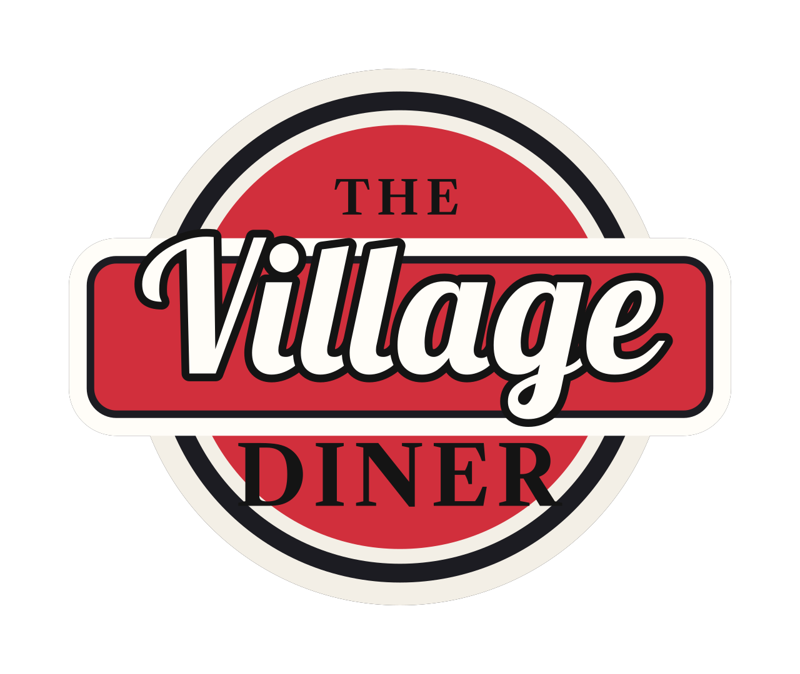
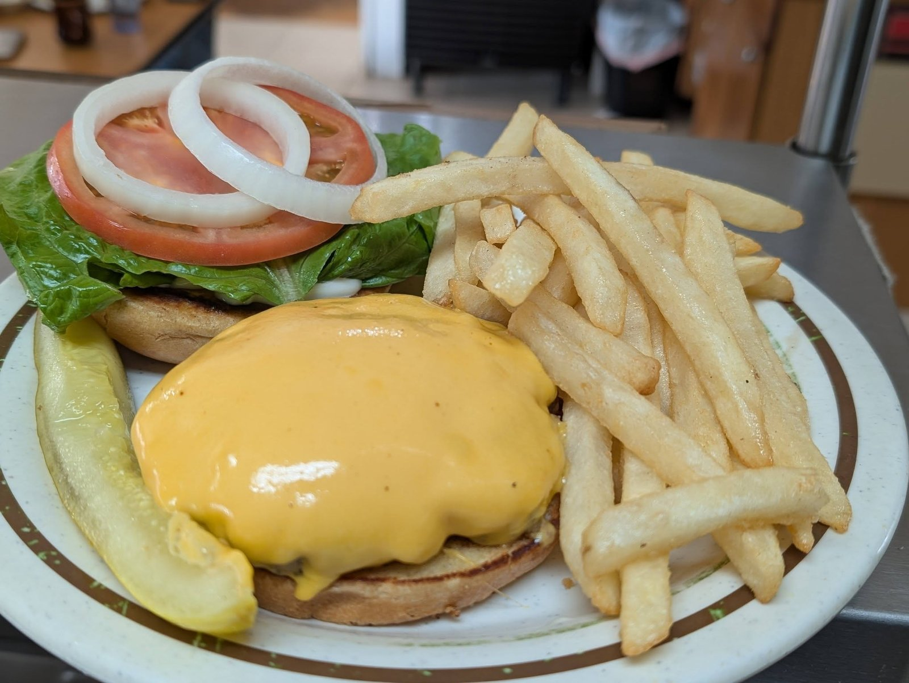

Eggs Benedict or gluten-free blueberry pecan French toast
Eggs Benedict with your choice of meat, or house-made gluten-free blueberry/pecan French toast.

The Village Diner Call (607) 217-4134
These are recent daily or weekly specials, not the standing menu. Offerings change — check Facebook or call to see what’s on today. The posts did not list prices.
Eggs Benedict with your choice of meat, or house-made gluten-free blueberry/pecan French toast.

Honest cheeseburger all the way, with your choice of side.

A weekly hot-dog special. Check Facebook for the week’s version.
Friday is for mac & cheese. A recurring Friday special — confirm what’s on this week.
| Sunday | Closed |
|---|---|
| Monday | Closed |
| Tuesday | 8:00 AM – 3:00 PM |
| Wednesday | 8:00 AM – 3:00 PM |
| Thursday | 8:00 AM – 3:00 PM |
| Friday | 8:00 AM – 3:00 PM |
| Saturday | 7:00 AM – 2:00 PM to be confirmed |
Their Facebook page does not list hours. The schedule above comes from other public listings. Saturday closing time differs across those listings (2:00 PM on Google-style listings and Zmenu; noon on Yelp and MenuPix). Please confirm before going live. Saturday mornings are often the busiest time of the week.
Plates from the diner’s own Facebook posts. Confirm with the business before this site goes live. Source links are in the project README.
